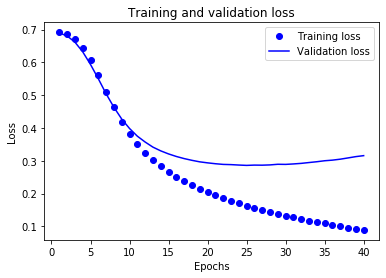
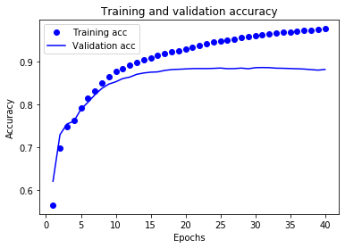

Análisis de sentimientos de IMDB usando TF.1.3¶
30 min | Última modificación: Julio 09, 2019
Basado en https://www.tensorflow.org/tutorials/keras/basic_text_classification?hl=es
Preparación¶
[1]:
from __future__ import absolute_import, division, print_function
import tensorflow as tf
from tensorflow import keras
import numpy as np
print(tf.__version__)
2.0.0-beta1
Descarga de datos¶
[2]:
##
## Dataset
##
imdb = keras.datasets.imdb
##
## Se descargan las 10000 palabras mas frecuentes
##
(train_data, train_labels), (test_data, test_labels) = imdb.load_data(num_words=10000)
Exploración de los datos¶
[3]:
##
## Datos de entrenamiento
##
print("Training entries: {}, labels: {}".format(len(train_data), len(train_labels)))
Training entries: 25000, labels: 25000
[4]:
##
## Cada entero representa una palabra en un diccionario
##
print(train_data[0])
[1, 14, 22, 16, 43, 530, 973, 1622, 1385, 65, 458, 4468, 66, 3941, 4, 173, 36, 256, 5, 25, 100, 43, 838, 112, 50, 670, 2, 9, 35, 480, 284, 5, 150, 4, 172, 112, 167, 2, 336, 385, 39, 4, 172, 4536, 1111, 17, 546, 38, 13, 447, 4, 192, 50, 16, 6, 147, 2025, 19, 14, 22, 4, 1920, 4613, 469, 4, 22, 71, 87, 12, 16, 43, 530, 38, 76, 15, 13, 1247, 4, 22, 17, 515, 17, 12, 16, 626, 18, 2, 5, 62, 386, 12, 8, 316, 8, 106, 5, 4, 2223, 5244, 16, 480, 66, 3785, 33, 4, 130, 12, 16, 38, 619, 5, 25, 124, 51, 36, 135, 48, 25, 1415, 33, 6, 22, 12, 215, 28, 77, 52, 5, 14, 407, 16, 82, 2, 8, 4, 107, 117, 5952, 15, 256, 4, 2, 7, 3766, 5, 723, 36, 71, 43, 530, 476, 26, 400, 317, 46, 7, 4, 2, 1029, 13, 104, 88, 4, 381, 15, 297, 98, 32, 2071, 56, 26, 141, 6, 194, 7486, 18, 4, 226, 22, 21, 134, 476, 26, 480, 5, 144, 30, 5535, 18, 51, 36, 28, 224, 92, 25, 104, 4, 226, 65, 16, 38, 1334, 88, 12, 16, 283, 5, 16, 4472, 113, 103, 32, 15, 16, 5345, 19, 178, 32]
[5]:
##
## Cada revisión contiene un número diferente de palabras
##
len(train_data[0]), len(train_data[1]), len(train_data[2])
[5]:
(218, 189, 141)
Conversión de enteros a palabras¶
[6]:
##
## Se recupera el diccionario con las palabras
##
word_index = imdb.get_word_index()
##
## Los primeros indices del diccionario son reservados
##
word_index = {k:(v+3) for k,v in word_index.items()}
word_index["<PAD>"] = 0
word_index["<START>"] = 1
word_index["<UNK>"] = 2 # unknown
word_index["<UNUSED>"] = 3
reverse_word_index = dict([(value, key) for (key, value) in word_index.items()])
def decode_review(text):
return ' '.join([reverse_word_index.get(i, '?') for i in text])
[7]:
##
## Primera revisión
##
decode_review(train_data[0])
[7]:
"<START> this film was just brilliant casting location scenery story direction everyone's really suited the part they played and you could just imagine being there robert <UNK> is an amazing actor and now the same being director <UNK> father came from the same scottish island as myself so i loved the fact there was a real connection with this film the witty remarks throughout the film were great it was just brilliant so much that i bought the film as soon as it was released for <UNK> and would recommend it to everyone to watch and the fly fishing was amazing really cried at the end it was so sad and you know what they say if you cry at a film it must have been good and this definitely was also <UNK> to the two little boy's that played the <UNK> of norman and paul they were just brilliant children are often left out of the <UNK> list i think because the stars that play them all grown up are such a big profile for the whole film but these children are amazing and should be praised for what they have done don't you think the whole story was so lovely because it was true and was someone's life after all that was shared with us all"
Preparación de los datos¶
Ver https://keras.io/preprocessing/sequence/#pad_sequences
[8]:
train_data = keras.preprocessing.sequence.pad_sequences(
train_data,
value=word_index["<PAD>"],
padding='post',
maxlen=256)
test_data = keras.preprocessing.sequence.pad_sequences(
test_data,
value=word_index["<PAD>"],
padding='post',
maxlen=256)
[9]:
##
## Longitudes de los primeros patrones de entrenamiento
##
len(train_data[0]), len(train_data[1])
[9]:
(256, 256)
[10]:
##
## Primer patrón de entrenamiento
##
print(train_data[0])
[ 1 14 22 16 43 530 973 1622 1385 65 458 4468 66 3941
4 173 36 256 5 25 100 43 838 112 50 670 2 9
35 480 284 5 150 4 172 112 167 2 336 385 39 4
172 4536 1111 17 546 38 13 447 4 192 50 16 6 147
2025 19 14 22 4 1920 4613 469 4 22 71 87 12 16
43 530 38 76 15 13 1247 4 22 17 515 17 12 16
626 18 2 5 62 386 12 8 316 8 106 5 4 2223
5244 16 480 66 3785 33 4 130 12 16 38 619 5 25
124 51 36 135 48 25 1415 33 6 22 12 215 28 77
52 5 14 407 16 82 2 8 4 107 117 5952 15 256
4 2 7 3766 5 723 36 71 43 530 476 26 400 317
46 7 4 2 1029 13 104 88 4 381 15 297 98 32
2071 56 26 141 6 194 7486 18 4 226 22 21 134 476
26 480 5 144 30 5535 18 51 36 28 224 92 25 104
4 226 65 16 38 1334 88 12 16 283 5 16 4472 113
103 32 15 16 5345 19 178 32 0 0 0 0 0 0
0 0 0 0 0 0 0 0 0 0 0 0 0 0
0 0 0 0 0 0 0 0 0 0 0 0 0 0
0 0 0 0]
Construcción del modelo¶
Estructura¶
[11]:
##
## Tamaño del vocabulario
##
vocab_size = 10000
## Crea un modelo vacio
model = keras.Sequential()
## Adiciona las capas
model.add(keras.layers.Embedding(vocab_size, 16))
model.add(keras.layers.GlobalAveragePooling1D())
model.add(keras.layers.Dense(16, activation=tf.nn.relu))
model.add(keras.layers.Dense(1, activation=tf.nn.sigmoid))
## Estructura del modelo creado
model.summary()
Model: "sequential"
_________________________________________________________________
Layer (type) Output Shape Param #
=================================================================
embedding (Embedding) (None, None, 16) 160000
_________________________________________________________________
global_average_pooling1d (Gl (None, 16) 0
_________________________________________________________________
dense (Dense) (None, 16) 272
_________________________________________________________________
dense_1 (Dense) (None, 1) 17
=================================================================
Total params: 160,289
Trainable params: 160,289
Non-trainable params: 0
_________________________________________________________________
Compilación¶
[12]:
model.compile(optimizer='adam',
loss='binary_crossentropy',
metrics=['acc'])
Patrones de entrenamiento y prueba¶
[13]:
x_val = train_data[:10000]
partial_x_train = train_data[10000:]
y_val = train_labels[:10000]
partial_y_train = train_labels[10000:]
Entrenamiento del modelo¶
[14]:
history = model.fit(
partial_x_train,
partial_y_train,
epochs=40,
batch_size=512,
validation_data=(x_val, y_val),
verbose=1)
WARNING: Logging before flag parsing goes to stderr.
W0709 14:24:13.814549 140402230138688 deprecation.py:323] From /usr/local/lib/python3.6/dist-packages/tensorflow/python/ops/math_grad.py:1250: add_dispatch_support.<locals>.wrapper (from tensorflow.python.ops.array_ops) is deprecated and will be removed in a future version.
Instructions for updating:
Use tf.where in 2.0, which has the same broadcast rule as np.where
Train on 15000 samples, validate on 10000 samples
Epoch 1/40
15000/15000 [==============================] - 1s 56us/sample - loss: 0.6918 - acc: 0.5652 - val_loss: 0.6898 - val_acc: 0.6209
Epoch 2/40
15000/15000 [==============================] - 1s 37us/sample - loss: 0.6854 - acc: 0.6983 - val_loss: 0.6805 - val_acc: 0.7298
Epoch 3/40
15000/15000 [==============================] - 1s 38us/sample - loss: 0.6707 - acc: 0.7491 - val_loss: 0.6618 - val_acc: 0.7545
Epoch 4/40
15000/15000 [==============================] - 1s 39us/sample - loss: 0.6446 - acc: 0.7624 - val_loss: 0.6322 - val_acc: 0.7614
Epoch 5/40
15000/15000 [==============================] - 1s 44us/sample - loss: 0.6071 - acc: 0.7929 - val_loss: 0.5936 - val_acc: 0.7888
Epoch 6/40
15000/15000 [==============================] - 1s 43us/sample - loss: 0.5610 - acc: 0.8147 - val_loss: 0.5501 - val_acc: 0.8053
Epoch 7/40
15000/15000 [==============================] - 1s 40us/sample - loss: 0.5111 - acc: 0.8318 - val_loss: 0.5041 - val_acc: 0.8228
Epoch 8/40
15000/15000 [==============================] - 1s 43us/sample - loss: 0.4627 - acc: 0.8501 - val_loss: 0.4630 - val_acc: 0.8378
Epoch 9/40
15000/15000 [==============================] - 1s 45us/sample - loss: 0.4189 - acc: 0.8654 - val_loss: 0.4272 - val_acc: 0.8479
Epoch 10/40
15000/15000 [==============================] - 1s 43us/sample - loss: 0.3812 - acc: 0.8767 - val_loss: 0.3984 - val_acc: 0.8533
Epoch 11/40
15000/15000 [==============================] - 1s 44us/sample - loss: 0.3497 - acc: 0.8847 - val_loss: 0.3749 - val_acc: 0.8608
Epoch 12/40
15000/15000 [==============================] - 1s 44us/sample - loss: 0.3234 - acc: 0.8918 - val_loss: 0.3571 - val_acc: 0.8642
Epoch 13/40
15000/15000 [==============================] - 1s 41us/sample - loss: 0.3018 - acc: 0.8993 - val_loss: 0.3415 - val_acc: 0.8707
Epoch 14/40
15000/15000 [==============================] - 1s 43us/sample - loss: 0.2825 - acc: 0.9039 - val_loss: 0.3301 - val_acc: 0.8738
Epoch 15/40
15000/15000 [==============================] - 1s 46us/sample - loss: 0.2661 - acc: 0.9089 - val_loss: 0.3208 - val_acc: 0.8757
Epoch 16/40
15000/15000 [==============================] - 1s 40us/sample - loss: 0.2515 - acc: 0.9144 - val_loss: 0.3130 - val_acc: 0.8764
Epoch 17/40
15000/15000 [==============================] - 1s 40us/sample - loss: 0.2379 - acc: 0.9185 - val_loss: 0.3066 - val_acc: 0.8798
Epoch 18/40
15000/15000 [==============================] - 1s 39us/sample - loss: 0.2258 - acc: 0.9230 - val_loss: 0.3012 - val_acc: 0.8818
Epoch 19/40
15000/15000 [==============================] - 1s 39us/sample - loss: 0.2149 - acc: 0.9249 - val_loss: 0.2966 - val_acc: 0.8825
Epoch 20/40
15000/15000 [==============================] - 1s 38us/sample - loss: 0.2051 - acc: 0.9289 - val_loss: 0.2936 - val_acc: 0.8833
Epoch 21/40
15000/15000 [==============================] - 1s 40us/sample - loss: 0.1949 - acc: 0.9343 - val_loss: 0.2909 - val_acc: 0.8841
Epoch 22/40
15000/15000 [==============================] - 1s 39us/sample - loss: 0.1865 - acc: 0.9381 - val_loss: 0.2889 - val_acc: 0.8842
Epoch 23/40
15000/15000 [==============================] - 1s 40us/sample - loss: 0.1781 - acc: 0.9421 - val_loss: 0.2882 - val_acc: 0.8841
Epoch 24/40
15000/15000 [==============================] - 1s 39us/sample - loss: 0.1707 - acc: 0.9459 - val_loss: 0.2869 - val_acc: 0.8846
Epoch 25/40
15000/15000 [==============================] - 1s 40us/sample - loss: 0.1632 - acc: 0.9482 - val_loss: 0.2858 - val_acc: 0.8854
Epoch 26/40
15000/15000 [==============================] - 1s 40us/sample - loss: 0.1565 - acc: 0.9510 - val_loss: 0.2867 - val_acc: 0.8839
Epoch 27/40
15000/15000 [==============================] - 1s 41us/sample - loss: 0.1501 - acc: 0.9532 - val_loss: 0.2865 - val_acc: 0.8841
Epoch 28/40
15000/15000 [==============================] - 1s 40us/sample - loss: 0.1440 - acc: 0.9561 - val_loss: 0.2873 - val_acc: 0.8853
Epoch 29/40
15000/15000 [==============================] - 1s 40us/sample - loss: 0.1386 - acc: 0.9587 - val_loss: 0.2892 - val_acc: 0.8837
Epoch 30/40
15000/15000 [==============================] - 1s 39us/sample - loss: 0.1330 - acc: 0.9606 - val_loss: 0.2889 - val_acc: 0.8862
Epoch 31/40
15000/15000 [==============================] - 1s 40us/sample - loss: 0.1273 - acc: 0.9625 - val_loss: 0.2902 - val_acc: 0.8866
Epoch 32/40
15000/15000 [==============================] - 1s 39us/sample - loss: 0.1222 - acc: 0.9661 - val_loss: 0.2920 - val_acc: 0.8863
Epoch 33/40
15000/15000 [==============================] - 1s 39us/sample - loss: 0.1173 - acc: 0.9675 - val_loss: 0.2945 - val_acc: 0.8851
Epoch 34/40
15000/15000 [==============================] - 1s 39us/sample - loss: 0.1129 - acc: 0.9683 - val_loss: 0.2970 - val_acc: 0.8848
Epoch 35/40
15000/15000 [==============================] - 1s 39us/sample - loss: 0.1087 - acc: 0.9695 - val_loss: 0.3000 - val_acc: 0.8842
Epoch 36/40
15000/15000 [==============================] - 1s 39us/sample - loss: 0.1044 - acc: 0.9717 - val_loss: 0.3018 - val_acc: 0.8837
Epoch 37/40
15000/15000 [==============================] - 1s 39us/sample - loss: 0.1001 - acc: 0.9729 - val_loss: 0.3047 - val_acc: 0.8830
Epoch 38/40
15000/15000 [==============================] - 1s 40us/sample - loss: 0.0963 - acc: 0.9745 - val_loss: 0.3086 - val_acc: 0.8817
Epoch 39/40
15000/15000 [==============================] - 1s 39us/sample - loss: 0.0931 - acc: 0.9757 - val_loss: 0.3126 - val_acc: 0.8805
Epoch 40/40
15000/15000 [==============================] - 1s 43us/sample - loss: 0.0891 - acc: 0.9771 - val_loss: 0.3156 - val_acc: 0.8821
Evaluación del modelo¶
[15]:
results = model.evaluate(test_data, test_labels)
results
25000/25000 [==============================] - 1s 39us/sample - loss: 0.3373 - acc: 0.8706
[15]:
[0.3372772836780548, 0.8706]
Gráfico de la precisión y la pérdida sobre el tiempo¶
[16]:
history_dict = history.history
history_dict.keys()
[16]:
dict_keys(['loss', 'acc', 'val_loss', 'val_acc'])
[17]:
import matplotlib.pyplot as plt
%matplotlib inline
acc = history_dict['acc']
val_acc = history_dict['val_acc']
loss = history_dict['loss']
val_loss = history_dict['val_loss']
epochs = range(1, len(acc) + 1)
plt.plot(epochs, loss, 'bo', label='Training loss')
plt.plot(epochs, val_loss, 'b', label='Validation loss')
plt.title('Training and validation loss')
plt.xlabel('Epochs')
plt.ylabel('Loss')
plt.legend()
plt.show();

[18]:
plt.plot(epochs, acc, 'bo', label='Training acc')
plt.plot(epochs, val_acc, 'b', label='Validation acc')
plt.title('Training and validation accuracy')
plt.xlabel('Epochs')
plt.ylabel('Accuracy')
plt.legend()
plt.show()
